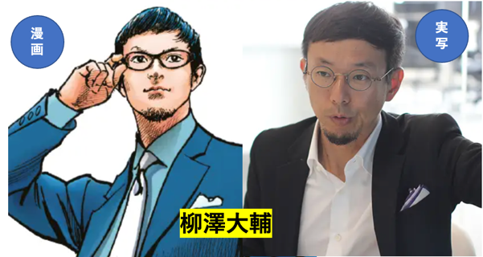

神奈川県鎌倉市にとてもユニークな会社があります。名前もちょっとユニークで「面白法人カヤック」という会社です。その名の通り、うんこミュージアムなどのイベント企画から、不動産、葬儀事業など様々な分野を面白くすることを事業としている会社です。絵画の量り売りサービスなども"発明"しています。サイコロ給、スマイル給といった常識外れな人事制度も有名です。（毎月サイコロをふって「月給×（サイコロの出目）％」が＋αとして支給されるのがサイコロ給。スマイル給は、コストゼロで効果絶大です）
そんな会社の社長、柳沢（やなさわ）さんが、これまでブログで発信してきた経営者としての様々な考え方をまとめた本です。上から目線ではなくご自身の反省も含め、とても真摯で誠実な内容がいっぱい書かれています。会社を経営する上でとても参考になる具体的なことがたくさんあります。
たとえば、欧米的な経営手法が日本に入ってきた時、KPI（Key Performance Indicator）なる評価指標が世の中で注目されました。経営者からみるとかっこいいですが、社員からするとやらされ感満載の単語です。KPIの典型である売上、利益といった指標はもちろん大事なのですが、そういう指標だけゴリゴリ追求していくと社内がギスギスしてきます。そこで、カヤックでは、「社員が楽しく働けているか」を大事な指標にしているといいます。
社員が楽しいかどうか、それを実現するための具体的な方法として、こんな手当があります。それは「離職率連動型！のこるん同期旅行手当」〜新卒が入社後五年目の時点で同期の離職率が十パーセント以下の場合、世界一周旅行に行けるという企画です（ちなみに、離職率が七十パーセント以上の場合は日帰り健康ランド）。これならお互いに「辞めないで頑張ろうぜ！」と励ましあうことができるし、楽しく残ろうという気持ちになれます。何より面白い。
「面白いかどうか」これをあらゆるところで追求している会社です。柳澤さん曰く「働くことそのものを面白くして、楽しんでしまおうというアプローチ。これも、「面白指数」として数値化する試みを続けてきました。同じように、従来の資本主義を肯定しながらも、それだけでは測れない価値があるのではないか。そうした価値を指標化することが、豊かさの再定義だと考えています」。
「企業が生み出すInvisible Value：みえざる価値」を、"面白ろ可笑しく"高めようとするこの会社の存在は、これからの日本社会の一隅を照らす光になっています。やがてその光が世界を照らす日が来るかもしれません。

残念ながら（？）本書は、電子書籍のみです。電子書籍（Kindleなど）に馴染みのない方は、ぜひこの機会にお試しください。なかなか便利ですよ。あらゆる本がスマホやiPadに収めることができ、検索やメモもできる。紙の本は紙の本の良さがありますが、電子書籍も独自の良さがあります。
働く意味、会社の存在意義、社員を大事にするにはどうすれば楽しいか、今まで当たり前と思ってきた経営の常識はそれでいいのか、などなど、ユニークな刺激がもらえる内容がきっとあります。とても読みやすい文体もお気に入りです。本書を参考に、仕事場（会社）を遊び場（楽しい場所）にしてみませんか。